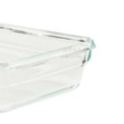
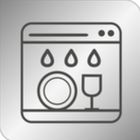

Her durum için; Tefal Masterseal Fırınlanabilir Cam Gıda Saklama Kapları, hazırlama ve pişirmeden servise, dondurmaya ve yeniden ısıtmaya kadar her şeyi yapar. Her durum için mükemmel çözüm olan bu kullanışlı cam kaplar, artık aynı boyuttaki kapların dengeli bir şekilde istiflenmesi için özel güçlendirilmiş bir istifleme kenarına ve daha da sağlam bir cam yapıya sahip. Bildiğiniz ve sevdiğiniz her şey: Fırın ve mikrodalgadan buzdolabına ve derin dondurucuya, bu yiyecek kapları hem 420°C'ye kadar ısıya hem de dondurucuya dayanıklıdır. Ayrıca zahmetsiz temizlik için bulaşık makinesinde yıkanabilir ve mükemmel gıda saklama için %100 hijyeniktirler. Tek yapmanız gereken klipslemek ve kapatmak!

Masterseal Fırınlanabilir Cam Saklama Kapları'nın tasarımı, aynı boyuttaki kapların güvenli ve dengeli şekilde istiflenmesini sağlayan güçlendirilmiş kenara ve yerden tasarruf sunan sağlam cam malzemeye sahiptir.
420°C'ye* varan sıcaklıklarda doğrudan fırında veya mikrodalgada pişirme ve yeniden ısıtma için uygundur. *kapaksız kullanımda
Tamamen sızdırmaz tasarım, işte , okulda, piknikte yemeklerinizi güvenle taşımanızı sağlar.
Masterseal Fırınlanabilir Saklama Kapları, -40°C'ye kadar güvenlidir.

Bulaşık makinesinde yıkanabilir tasarım, temizliği çok kolaylaştırır.
Kapak tasarımı sayesinde olağanüstü hijyen sağlanır.
Alman uzmanlığı ve mühendisliği, özel olarak tasarlanmış kapakta mükemmel hassasiyetle bir araya geliyor.